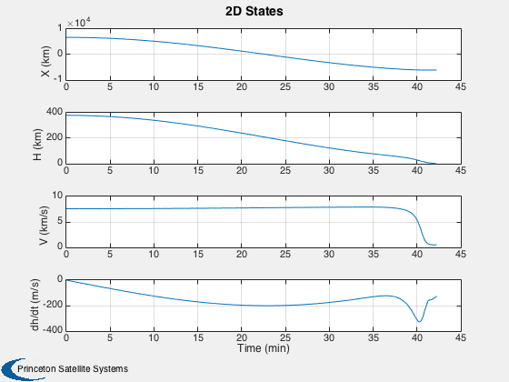
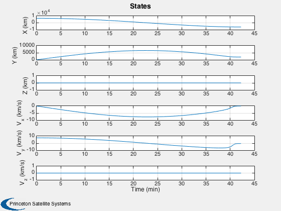
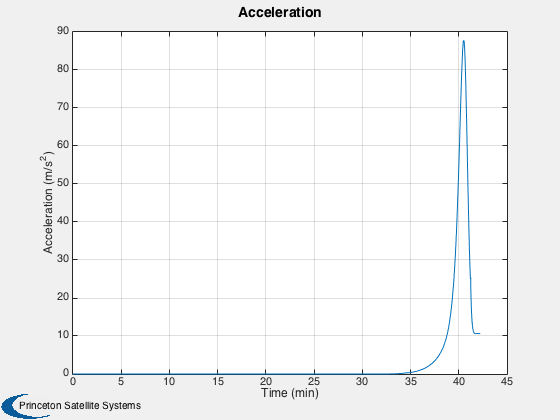
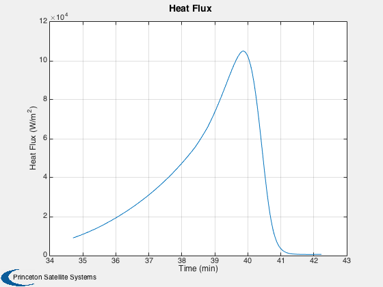

A reentry simulation with lift and drag forces. Uses LiftingReentry3D.m
The vehicle starts at 380 km, the ISS altitude. It does a delta-v to do a Hohmann transfer to 40 km where drag causes reentry. You can control reentry using angle of attack (d.alpha). ------------------------------------------------------------------------ See also Plot2D, TimeLabl, Dot, Mag, RK4, Unit, DVHoh, RHSLiftingReentry3D ------------------------------------------------------------------------
Contents
%------------------------------------------------------------------------------- % Copyright (c) 2009 Princeton Satellite Systems, Inc. % All Rights Reserved. %------------------------------------------------------------------------------- nSim = 4800; dT = 1; d.rPlanet = 6378.165; d.omega = 2*pi/86400; d.alpha = 0; d.l = 10; d.sRef = 20; d.oswaldEff = 0.95; d.aspectRatio = 6; d.thickness = 0.01; d.cLAlpha = 10; d.mu = 3.9860036e5; % km/s^2 d.mass = 100; d.mHyper = 7; r0 = d.rPlanet + 380; r = [r0;0;0]; rI = d.rPlanet + 40;
Hohmann transfer to 70 km
%-------------------------- [dV, dV1, dVI] = DVHoh( rI, r0, sqrt(d.mu/rI) ); v = [0;sqrt(d.mu/r0) - dVI;0]; x0 = [r;v]; % Last number is mass of fuel
Run the sim
% Store plot points in x %----------------------- x = [x0 zeros(length(x0),nSim)]; f = [LiftAndDragSeaLevelToOrbit(x0,d)/d.mass zeros(3,nSim)]; for k = 1:nSim x(:,k+1) = RK4( @RHSLiftingReentry3D, x(:,k), dT, 0, d ); f(:,k+1) = LiftAndDragSeaLevelToOrbit(x(:,k),d)/d.mass; if( Mag(x(1:3,k+1)) - d.rPlanet <= eps ) break; end end x = x(:,1:(k+1)); f = f(:,1:(k+1));
Calculate the heating rate history
%------------------------------------ d.time = (0:k)*dT; d.velocity = Mag(x(4:6,:))*1000; d.aoa = d.alpha; d.altitude = (Mag(x(1:3,:)) - d.rPlanet)*1000; k2 = find(d.altitude < 80000,1); d.time = d.time(k2:end); d.velocity = d.velocity(k2:end); d.altitude = d.altitude (k2:end); qDot = AeroHeatFlux( d, d.l, 'laminar plate' );
Plot the states
% Create the time array and label %-------------------------------- [t, tL] = TimeLabl( (0:k)*dT ); yL = {'X (km)' 'H (km)' 'V (km/s)' 'dh/dt (m/s)'}; dhdt = Dot(Unit(x(1:3,:)),x(4:6,:))*1000; h = Mag(x(1:3,:)) - d.rPlanet; Plot2D( t, [x(1,:);h;Mag(x(4:6,:));dhdt], tL, yL, '2D States'); yL = {'X (km)' 'Y (km)' 'Z (km)' 'V_x (km/s)' 'V_y (km/s)' 'V_z (km/s)'}; Plot2D( t, x(1:6,:), tL, yL, 'States'); yL = {'Acceleration (m/s^2)'}; Plot2D( t, Mag(f), tL, yL, 'Acceleration'); [t, tL] = TimeLabl( d.time ); yL = {'Heat Flux (W/m^2)'}; Plot2D( t, qDot, tL, yL, 'Heat Flux ' ); %-------------------------------------- % PSS internal file version information %--------------------------------------   